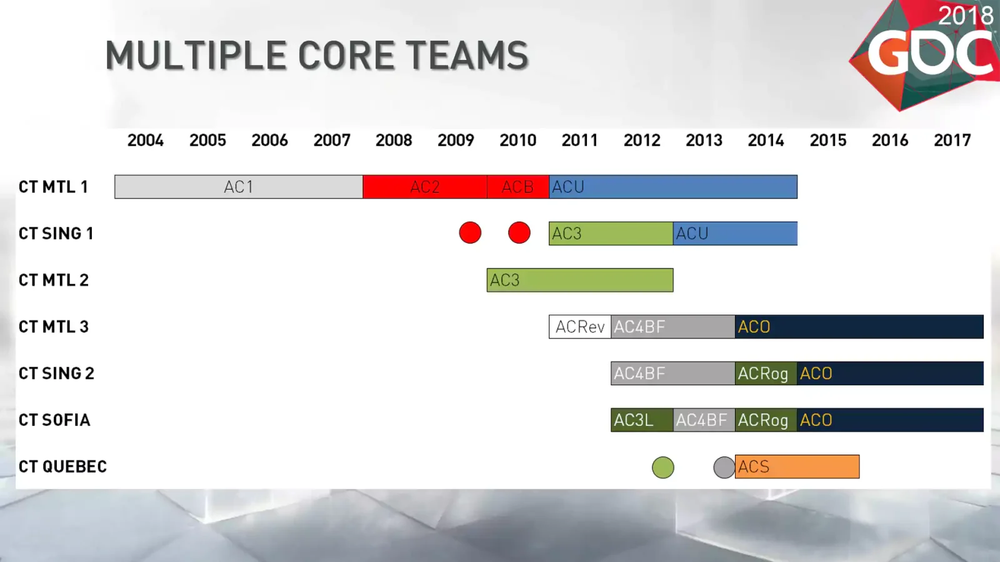
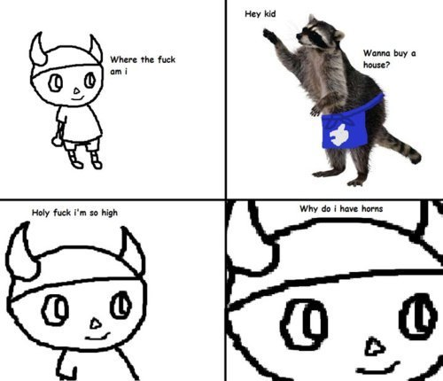

Gut-driven development
I worked at Twitch for five years. Here's what I came away with: I don't like being data-driven.
Data is nice. It helps you make decisions. But I see companies experimenting, A/B testing, whittling down every decision into a data-driven perfection sent from the heavens. Every little thing gets stalled at the "Can we show this in data?" phase.
It's abused. Leaning on data too much is a death trap. Data-driven development doesn't charm users, or make them feel butterflies in their stomach. And I hate it.
I hate it for two reasons.
1. It's ignorant
Pro tip: If anyone suggests a design change you don't like, just say "Do you have any data to back that up?" Nobody knows how to answer this question.
— Mark Dalgleish (@markdalgleish) July 12, 2019
It's pompous to think you can track everything you need to make good decisions. An example I like to use when I talk about this is Assassin's Creed.
Assassin's Creed (the first one) was a risky move for a game developer to make, and it paid off! It had its shortcomings, but all risks do. It had interesting tech and it was a fresh genre.

The Assassin's Creed II trilogy resolved some of those shortcomings and took some more risks. Great! That's what a sequel to a risky game should do (see: Portal 2).
By Assassin's Creed III, it was clear that Ubisoft had taken this series under a different wing—the "Oh, it's successful?" wing, whose responsibility is to milk the cow. Things didn't change much in Assassin's Creed games after that. They had the perfect cow, and now they could sell milk. Just whatever you do, don't disturb the cow!
The games started looking more or less like a yearly sports game. Ubisoft announced proudly that it had spun up a second Assassin's Creed team, so they could trade off releasing every year. Wow! What a great idea.

Assassin's Creed games started sucking. They were meticulously crafted time sinks. Just fun enough to keep you playing, and not one iota more. I started despising my time spent running between continents that looked identical and quests that played out the same, but I didn't realize why I kept playing.
This is the fast food industry of gaming. Cold, calculating, efficient—and effective! Assassin's Creed games are wildly successful because of this strategy. But it overlooks one thing.
Loyalty
People catch on. They realize they don't get true satisfaction out of the game, just satiation. It might last one game, or two, or ten, but eventually people catch on—consciously or not—and stop coming back.
(Of course in the meantime boatloads of money have been made, but that's not the point of this article.)
The opposite of this strategy is someone like Nintendo. Nintendo doesn't give a shit. They love making amazing games, data be damned. And I'll tell you what, if I had to choose between being data-driven like Ubisoft or not giving a flying fuck like Nintendo, I'll choose the latter every. goddamned. time.
Because you know what? Nintendo makes amazing shit. They take risks, they do weird stuff, and it sometimes flops. The Wii U was a flop. Jumping around your living room to play Wii was a flop. But they weren't mistakes. The Wii U was v0.5 of the Switch. Jumping around your living room turned into gyroscopic aiming.
Even ignoring flops that get eventually tuned, for every mistake they make Nintendo gets something right. The control stick. The 3D platformer. The twin-stick first-person shooter. The fucking home video game system. The handheld console. The open-world adventure game. The metroidvania. Without Nintendo out there taking risks, the video game industry would be data-driven pieces of shit from 30 years ago.
Gut-driven development
I want to be like Nintendo. Fuck data-driven. Why build a thing if it sucks? How about we don't build that thing? How about we build something that might be cool instead, and don't care about justifying it with data?
When Nintendo released the Wii U, I did what I do every time Nintendo releases a console. I waited in line for 17 hours. It's always a hoot—my favorite was the Wii launch, with a few hundred people playing Mario Kart DS with random strangers only ten feet away, one guy playing relaxing acoustic guitar, and people getting hype together, in and out of sleep, serving each other cocoa, from the afternoon of the previous day until opening.
I always arrived around 17 hours before release because it worked really well with me for the Gamecube—I'd been position 108 out of 120 available units, so I didn't waste much time being in line too early.
But this time, for Wii U, something was different. I was first in line. And you know what? The second person in line didn't show up until two hours before opening. By the time the doors opened, only about 9 more people showed up.
I was thinking, What the fuck? This is nothing like the Wii launch. Where is everybody? What's going on?
Of course, spoiler alert, you know what was going on. The Wii U sucked. Not just as a console, but as a marketing push, and as a launch platform for games. Nothing really came out on it other than Splatoon, Wind Waker HD, and Twilight Princess HD, and those all took a while.
So Nintendo failed me. I did what superfans do, I gave my heart, my time, and my money, and it was a let-down.
I don't care. Look at this:
My loyalty bar towards Nintendo before the Wii U.
Now look at this:
My loyalty bar towards Nintendo after the Wii U.
I will still wait in line 17 hours next time a Nintendo console comes out.
They've built this loyalty over many years, many games, many decisions, and so much love. If you brought an alien down to Earth and told them to group video games by style, Nintendo would stand out like a giant.
Think about how fucking insane all of Animal Crossing is.

Not because it increases Twitter interactions with their hashtag or some shit. Do you think Nintendo even knows what Twitter is? This is just the shit that comes out of their brains. You can't make it by looking at data.
Summarizing
Loyalty bars aren't exposed in data, at least not until a literal lifetime of good data collection goes by. But everyone has a loyalty bar. You have one. Your mom has one. That weird roommate you had in college that only plays Madden has one.
Every time a bad decision is made, it might reflect nicely in the data regardless of user opinion. If you make it hard for users to cancel their subscriptions, will fewer users cancel their subscriptions? Probably! Does that mean you should do it?
I'll let you decide.
2. It's inefficient
If you're still convinced data-driven is the best goddamned thing in the world, this one's for you. Here's a data-driven way you can evaluate data-driven development. Please, please try this at home.
Being data-driven is hard. If you know what you're doing, sure, you can write some SQL or use your user-friendly tool like Mixpanel or advanced Google Analytics shit to find out what the fucking favorite colors of users who land on your frontpage then go to the purchase page then don't follow through with the purchase are. Great! I'm proud of you.
But all the shit that goes on underneath that—not just building the instrumentation, not just testing it, not just speccing it out, not just agreeing between people what should be reported and when, not just going through periodically and making sure everything you're reporting is consistent and well-formatted, not just dealing with typos in events and properties, and not just expending all the extra effort that you have to expend while building every single feature and maintaining every previously-built feature—oh wait I'm sorry, it is just all that.
It's hard, person. Like 10x hard.
Go ahead and make the 80/20 trade-off—put your Google Analytics snippet in your pages or whatever. But instrumenting every single tiny little thing is just not worth it.
The landscape that results from a data-driven setup is strictly better if you know how and when to use it (see: 1. It's ignorant), but if you could ditch all that extra framework, scaffolding, and manpower in exchange for a 10x or 100x velocity on gut-driven features... wouldn't you?
If your team while data-driven team can churn out a feature a month with a 75% hit rate, and while gut-driven team can churn out 10 or 100 features a month with a 25% hit rate... wouldn't you choose the latter? What about 90/10? 50/50? What's your team's ratio?
Don't know the answer? Run a fucking experiment.
Conclusion
Loyalty bars defy data. They're not special snowflakes, but they are really hard to measure, and they're orders of magnitude more important than the things that are easy to measure. But if you one day discovered users just wanted to be charmed and feel butterflies... forget the goddamned cursed data. Wouldn't you charm them and build butterflies?
Note: I my time spent at Twitch and all my former coworkers there. This article is not meant to bash them or tell them I know better than them—there are very good arguments for using data as well, made by people much smarter than me. This is my take as a small business owner. Peace and love ✌